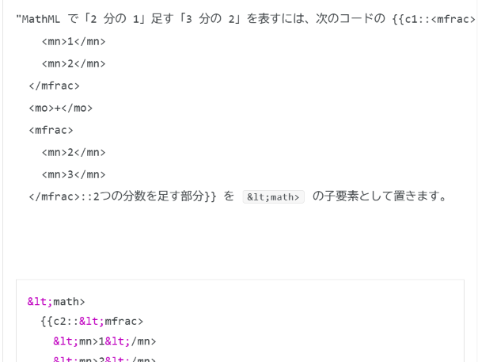
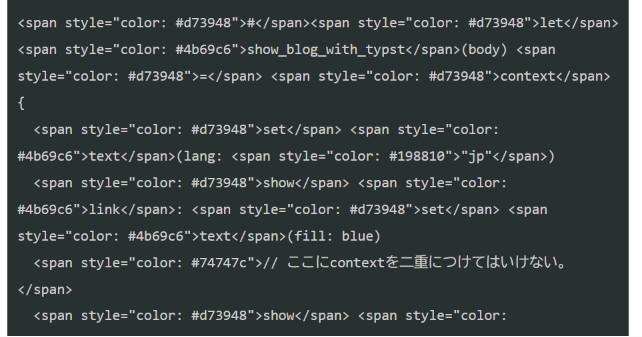
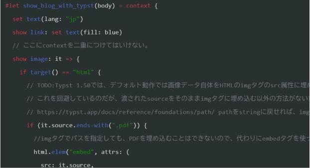

<section role="doc-endnotes">内の内容も取り出して、ブログに貼り付ける必要があります。私は普段Typstでブログを書いている。TypstにはHTML出力機能があり、Typstで書いた文章をHTMLに変換してブログに投稿することができる。
しかし、TypstのHTML出力機能はまだ実験的な段階であり、そのまま変換すると余計なHTMLタグが付いてしまったり、画像データががimgタグ内に埋め込まれてしまったりするなど、ブログに貼り付けるには不便な仕様になっている。
そこで、Typstで書いた文章をブログに貼り付けるためのテンプレートを作成した。
#let show_blog_with_typst(body) = context {
set text(lang: "jp")
show link: set text(fill: blue)
// ここにcontextを二重につけてはいけない。
show image: it => {
if target() == "html" {
// TODO:Typst 1.50では、デフォルト動作では画像データ自体をHTMLのimgタグのsrc属性に埋め込む仕様になっている。
// これを回避しているのだが、渡されたsourceをそのままimgタグに埋め込む以外の方法がないため、フォルダー内に別のtypstファイルがあって、それをincludeしている場合などに、相対パスの位置が変わり時々壊れる。
// https://typst.app/docs/reference/foundations/path/ pathをstringに戻せれば、imgタグにstr(path(it.source))のようにして渡すことで相対パスの位置を正しく計算できるの可能性があるが、現状ではそれも不可能なので、仕方なくsourceをそのままimgタグに埋め込む仕様にしている。]
if (it.source.ends-with(".pdf")) {
//imgタグでパスを指定しても、PDFを埋め込むことはできないので、代わりにembedタグを使ってpdfを埋め込む。
html.elem("embed", attrs: (
src: it.source,
style: "max-width: 100%; height: auto;",
))
} else {
html.elem("img", attrs: (src: it.source, style: "max-width: 100%; height: auto;"))
}
} else {
it
}
}
// TODO:html,headやbodyタグを消したいが、Typst 1.50では不可能そうなので応急処置として、警告されるようにしておく。ブログのHTML構造が崩れていることが一目でわかるので、Typstで書き出したHTMLの中身とstyleタグだけを取り出して、ブログに貼り付ける必要があることを思い出せるはず。
if target() == "html" {
html.elem(
"h1",
)[警告:このTypstで書き出したHTMLはdiv\#takehereの中身とstyleタグだけを取り出して、ブログに貼り付ける必要があります。脚注がある場合は、`<section role="doc-endnotes">`内の内容も取り出して、ブログに貼り付ける必要があります。]
html.elem("div", attrs: (id: "takehere"))[
#body
#divider()
この記事はTypst 1.50.1の実験的なHTML出力機能を用いて生成されました。
ソースコードのリポジトリは#link("https://github.com/manybear-a1/blog-typst", "こちら")
// 現時点では生成元のTypstファイル名の自動取得は不可能(https://github.com/typst/typst/discussions/2295)
// 生成元のTypstファイル名は
]
} else {
body
}
}しかしこれでもかなり手間がかかる。というのも、画像をすべてアップロードして、urlを書き換えなければならないからだ。それに、必要な部分の切り取りも手動なので、かなり長い文章を書いた場合、切り取り作業が大変になる。そこで、Typstで書いた文章をブログに投稿するためのスクリプトを作成することを考えた。もし、HatenaBlogにAPIがあれば、APIを使うことで、Typstで書いた文章をブログに投稿する際の手間を大幅に減らすことができる。
はてなブログ、フォトライフのAPIを使って投稿を自動化する はてなブログAtomPub はてなブログの WEB API を使う 等を見て下調べをしたところ、画像の貼り付けも含めて、どうやらAPIを使えば完全自動化ができそうだとわかったので、Typstで書いた文章をブログに投稿するためのAPIをDeep Seek V41. Flash 1017に頼んで作成してもらうことにした。
まずは、記事本体（画像無し）が投稿できるようにスクリプトを書いてもらった。
しかし、更新の概念を伝え忘れて毎回新しい下書きを作ってしまったのと、typstからhtmlへのコンパイルも一緒に実行してもらうのを忘れていたので、両方の要望を伝えて改良してもらった。
さてさてここで記事をプレビューしてみると……

なんと、markdownのコードブロックが発動し、二重のコードブロックが生まれてしまった。これどうしよう？
さらにもう一つ問題があって、記事の管理システムが、すべての記事とURIの対応を一つのjsonファイルで管理しているため、ここに画像のURIを追記するととんでもなく長いjsonファイルになってしまう。
あと既にpythonファイルが700行を超えてしまっているので、これ以上pythonファイルを長くするのは避けたい。pythonファイルの分割もさせないといけない。
仕方ないので、さらに指示して、各記事のディレクトリに対応するjsonファイルを作ってもらうように明示的に指示する。
なんかだいぶ時間かかってるけど大丈夫かなぁ。一度に4つも指示したからかなぁ。
どうやら20分強かかって完成したらしい。とりあえず投稿予定だった画像0枚の記事を投稿してみる。
上手くいったようだ。投稿された記事を眺めていると、忘れていた機能を思い出した。
元々、テンプレコードには実際に生成元となったtypstファイルへのリンクを載せるつもりだったのだが、Typst 1.50では生成元のtypstファイル名を自動取得することができないため、テンプレコードにtypstファイルへのリンクを載せることができなかった。
しかし、Pythonで後処理する前提ならば、HTMLの中にtypstファイル名を埋め込むことは可能なので、Typstで書いた文章をブログに投稿するためのScriptに、生成元のtypstファイル名をHTMLに埋め込む機能を追加してもらう。
ソースコードのリポジトリは#link("https://github.com/manybear-a1/blog-typst", "こちら")
// 現時点では生成元のTypstファイル名の自動取得は不可能(https://github.com/typst/typst/discussions/2295)
// 生成元のTypstファイル名はまた、記事のテンプレコードを新たに作成した。今までは前の記事をコピーして、それを書き換えて記事を作成していたのだが、そういう秘伝のたれ的なやり方はいつかやめたいと思っていたので、このタイミングで廃止した。
せっかくテンプレコードを作ったからには#set document(title: "Example Document")のように、記事のタイトルも追加できるようにしたい。
でもその前に、まずは画像が正しくアップロードされるか確認する必要がある。幸いにもこの記事には画像が入っているので、この記事でテストができる。
上手くいった。しかしまた別の問題があった。またもやコードブロックがバグっている。

どうやらTypstのシンタックスハイライトと、Hatenaブログのコードブロックが干渉してしまっているようだ。
とりあえず、トリプルクオートの後の言語を指定しないことで、Typstのシンタックスハイライトを無効化してあげると、シンタックスハイライト自体はないが、とりあえず読めるようにはなった。
問題がないことが確認できたので、タイトルとリンクの機能追加に移る。
できた。記事のタイトルは#set document(title: "Example Document")で設定できるようになった。リンクも生成先に飛べるようになった。
Markdown記法をやめられないかちょっと調べてみたところ、 編集モードページに、見たままモードを使うと二つ目の編集タブでHTMLを直接編集できることがわかった。HTMLモード（有料プランのみ）とか書いてあるから課金しないと使えないのかと思っていた。
この編集モードに設定しておいて、別の記事（同じ記事は途中で編集モードを切り替えられない）で、Typstで書いた文章をHTMLに変換して、ブログに貼り付けると、Markdown記法を使わずに済むことがわかった。しかも、Typstのシンタックスハイライトも使えるようになった。

めでたしめでたし。
この記事はTypst 1.50.1の実験的なHTML出力機能を用いて生成されました。
ソースコードのリポジトリはこちら